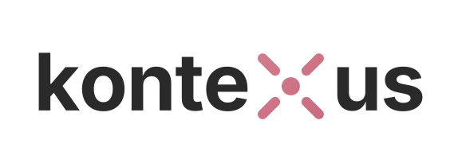
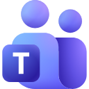
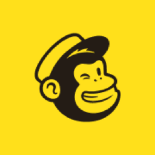
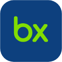
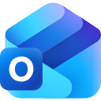
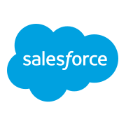
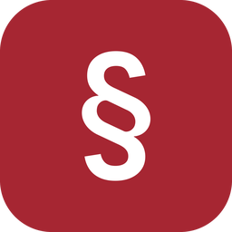
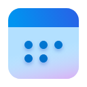
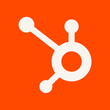
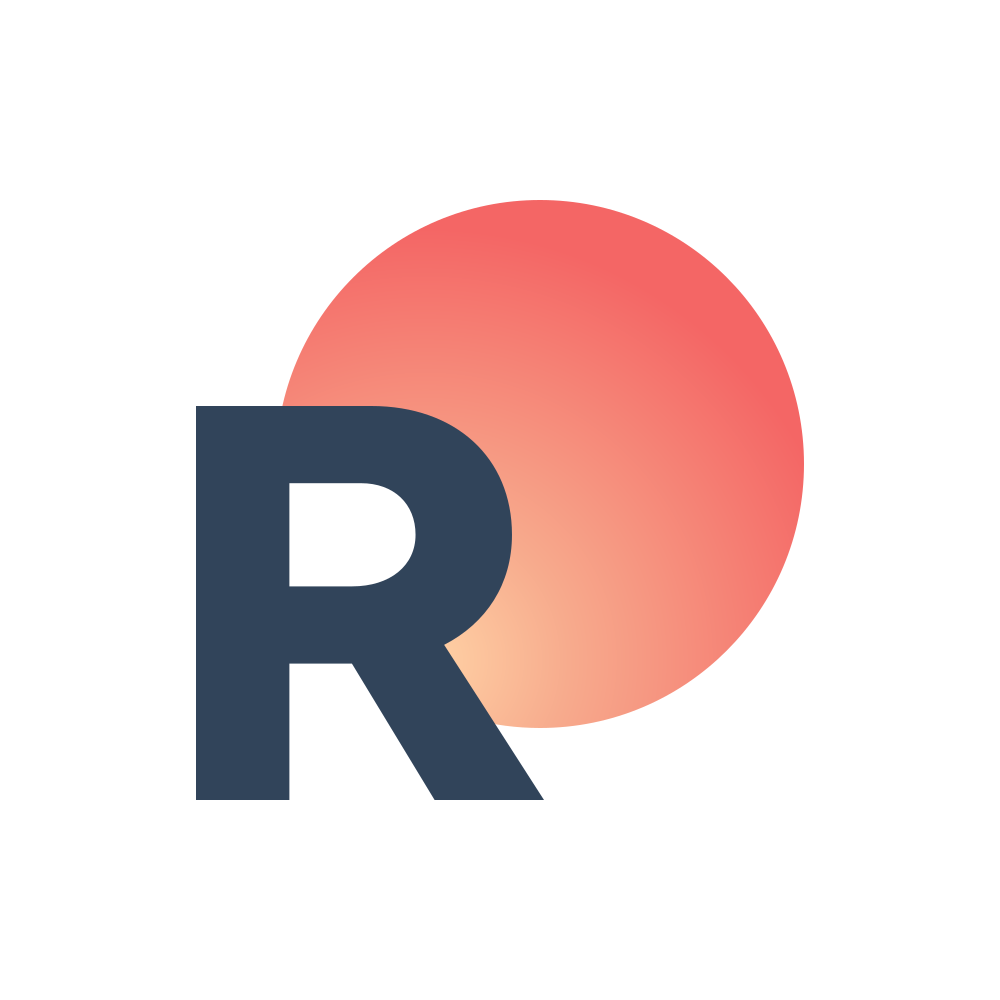

+
Gesuche entwerfen
Förderstiftungen suchen, die zum Projekt passen, und das Gesuch aus euren früheren Gesuchen entwerfen.

Kontexus erledigt wiederkehrende Büroarbeit in Schweizer Software wie Fundraiso und Bexio. Eure Daten und das KI-Modell bleiben in der Schweiz, und bevor etwas rausgeht, fragt Kontexus nach.
Betrieben in der Schweiz bei Infomaniak, mit 100 % erneuerbarem Strom.
Förderstiftungen suchen, die zum Projekt passen, und das Gesuch aus euren früheren Gesuchen entwerfen.

+
Neuigkeiten aus eurem Teams-Kanal sammeln und in Mailchimp den nächsten Newsletter entwerfen.

+
Offene Rechnungen in Bexio finden und freundliche Zahlungserinnerungen entwerfen.

Salesforce



RaiseNow Weitere SystemeBewährt sich ein Ablauf, kann er als Skill festgehalten werden. Beim nächsten Mal reicht ein kurzer Auftrag.
Nach Absprache: Demo-Zugang zum Ausprobieren, Konditionen für grössere Teams und Pilotprojekte.
Jetzt registrierenKontexus ist ein Schweizer KI-Arbeitsplatz der LLMify AG aus Cham. Er erledigt wiederkehrende Büroarbeit in Software wie Bexio, Microsoft 365 und Salesforce. NPOs, Vereine und Stiftungen sind ein Schwerpunkt.
Kontexus wird von der LLMify AG in Cham entwickelt und in der Schweiz betrieben. Das Schweizer KI-Modell ist ein frei verfügbares Modell (Open Weight): Wir haben es nicht selbst trainiert, betreiben es aber selbst in der Schweiz. Für den Datenschutz ist das der entscheidende Punkt, denn eure Daten verlassen die Schweiz damit nicht.
Kontexus läuft in der Schweiz und arbeitet mit euren Daten und in euren Programmen. Der Wert einer KI entsteht meist bei der Arbeit mit echten, manchmal heiklen Unterlagen: Gesuchen, Rechnungen, Adresslisten. Solche Daten lassen sich oft nicht einfach in ChatGPT eingeben. Kontexus liest sie dort, wo sie bei euch liegen, über die Programme verschiedener Anbieter hinweg, zum Beispiel in Bexio, Fundraiso und Microsoft 365. Mit dem Schweizer KI-Modell bleiben sie in der Schweiz, und bevor etwas rausgeht, fragt Kontexus nach.
Für Büroarbeit, die immer wieder anfällt. Kontexus sucht in Fundraiso Förderstiftungen, die zu eurem Projekt passen, und entwirft das Gesuch aus euren früheren Gesuchen. Es sammelt die Neuigkeiten aus eurem Teams-Kanal und entwirft in Mailchimp den nächsten Newsletter. Und es findet offene Rechnungen in Bexio und entwirft freundliche Zahlungserinnerungen.
Nein. Ein Ablauf, der sich bewährt, kann als Skill festgehalten werden: zum Beispiel, wie eure Gesuche aufgebaut sind oder in welchem Ton ihr an Zahlungen erinnert. Kontexus greift dann von selbst darauf zurück, und beim nächsten Mal reicht ein kurzer Auftrag.
Das Abo Start kostet CHF 60 pro Person und Monat, exkl. MWST. Alle verfügbaren Anbindungen sind inklusive, die Einführung ist ohne Aufpreis dabei. Konditionen für grössere Teams und Pilotprojekte gibt es nach Absprache.
Kontexus läuft in der Schweiz, in Rechenzentren von Infomaniak, und mit dem Schweizer KI-Modell bleiben auch eure Daten hier. Die Rechenzentren beziehen ausschliesslich Strom aus erneuerbaren Quellen. Wählt ihr ein Modell eines internationalen Anbieters oder bindet ihr einen Dienst mit Servern im Ausland an, zum Beispiel Mailchimp, Salesforce oder HubSpot, dann gehen die Daten, die ihr damit bearbeitet, an diesen Anbieter. Beides entscheidet ihr.
Nein. Bevor etwas rausgeht, fragt Kontexus nach. Eine E-Mail zum Beispiel wartet auf eure Freigabe, und ihr lasst sie zu oder lehnt sie ab.
Der Schwerpunkt liegt auf Schweizer Software wie Fundraiso, Bexio und Zefix. Dazu kommen Microsoft 365 (Outlook, Kalender, Teams, OneDrive), Mailchimp, Salesforce, HubSpot und weitere, und Kontexus arbeitet mit Word-, Excel- und PDF-Dateien. Die Anbindung an RaiseNow ist in Entwicklung. Nutzt ihr ein anderes System, besprechen wir die Anbindung gern.
Ihr registriert euch auf kontexus.ch oder fragt einen Büro-Check von 30 Minuten an: Ihr erzählt von eurem Büroalltag, wir zeigen, was Kontexus übernehmen könnte. Einen Demo-Zugang zum Ausprobieren gibt es nach Absprache.
Ihr erzählt von eurem Büroalltag, wir zeigen, was Kontexus übernehmen könnte.

Die LLMify AG aus Cham ist ein Start-up der ETH Zürich.
LLMify wurde mit dem Age Innovation Prize 2026 ausgezeichnet, in der Kategorie «Technologische Innovation».